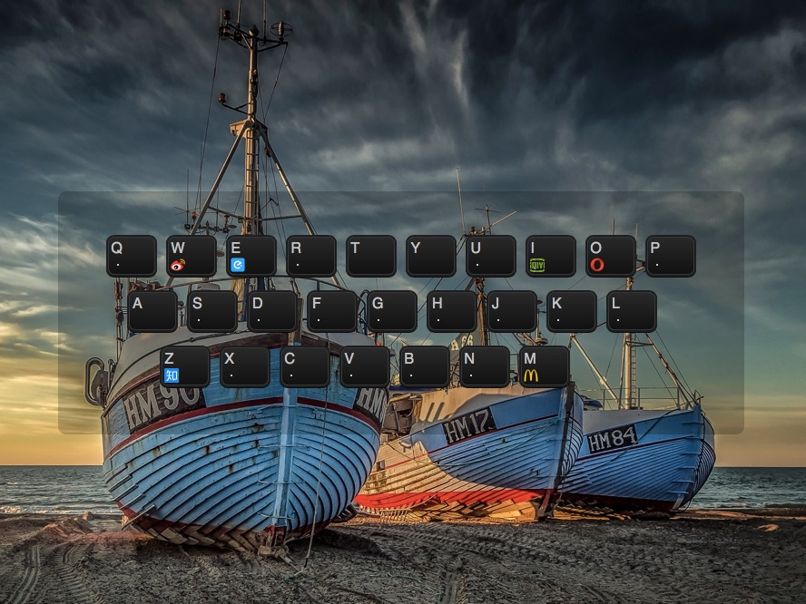

RS
card
关于
技能
作品
work1
work2
work3
博客
blog1
blog2
blog3
日历
联系方式
其他
Hello
方应杭
前端开发工程师
年龄
18
所在城市
北京
邮箱
fangyinghang@foxmail.com
手机
13812345678
下载 PDF 简历
方应杭， 资深前端工程师，资深前端讲师，现在在 饥人谷 教前端课程。
技能：前端开发，Rails 开发，Node.js 开发
技能
HTML 5 & CSS 3
JavaScript
jQuery
Vue.js
React.js
Node.js
作品集

留言